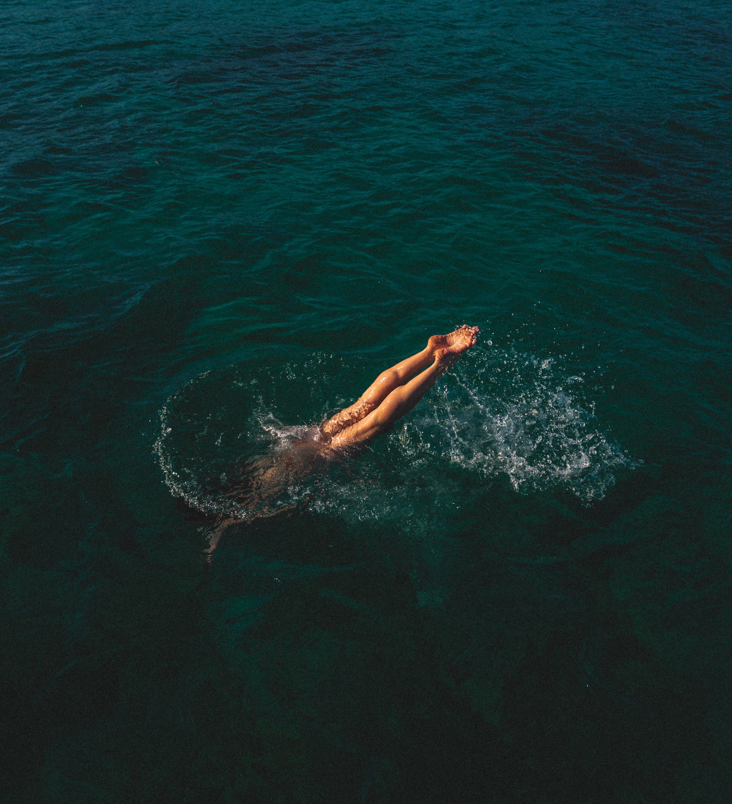

Photographe, guitariste et pianiste, j’ai grandi dans le sud de la France, en Provence.
J’ai commencé à me plonger dans la photographie dès mon plus jeune âge. Artiste dans l’âme, j’aime déambuler dans les villes de Provence afin de capturer un instant, une époque et d’en retranscrire un témoignage à travers mes photos. Extrêmement curieux, je suis constamment à la recherche de nouveaux projets.
Mes domaines de prédilection sont le portrait, le nu artistique et la street photography.